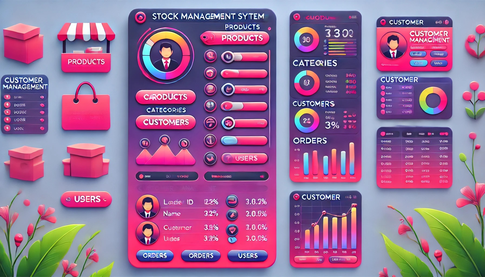

Stock Management System
Description: Developed an efficient software application for managing stock inventory using VB.NET and MySQL. The system enables businesses to track, manage, and update their stock seamlessly.
- Features CRUD operations for stock management.
- Implements MySQL for data storage and ensures data security.
- Provides user-friendly interfaces with real-time updates.
- Offers data visualization for inventory analysis.
Tools Used: VB.NET, MySQL
Outcome: Enhanced operational efficiency for businesses, reducing manual errors and optimizing inventory tracking.
Project Details: This project was developed to streamline inventory management for small and medium businesses, offering real-time tracking, updates, and analysis. It ensures better decision-making through data visualization.
